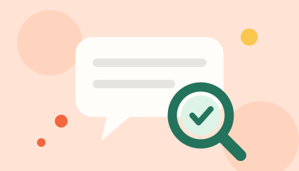
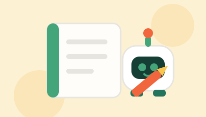

ثلاثة مقالات قصيرة تشرح لك أهم ما تحتاج معرفته قبل الاعتماد على أدوات الذكاء الاصطناعي.

قائمة المقالات
حماية البيانات
كيف تحمي بياناتك عند استخدام أدوات الذكاء الاصطناعي
قراءة في 4 دقائق
القاعدة الأولى: لا تكتب ما لا تقبل أن يراه غيرك.
عندما تستخدم أداة ذكاء اصطناعي فأنت في الحقيقة ترسل نصك إلى خادم بعيد يعالج الطلب ثم يعيد لك الإجابة.
هذا يعني أن كل ما تكتبه يخرج من جهازك، وقد يُحفظ لفترة حسب سياسة الأداة التي تستخدمها.
الفكرة ليست أن نخاف من هذه الأدوات، بل أن نستخدمها ونحن نعرف ماذا يحدث خلف الشاشة.
ابدأ من سؤال واحد
قبل أن تضغط زر الإرسال اسأل نفسك: لو ظهر هذا النص أمام زميلي أو أستاذي، هل سأتضايق؟
إذا كانت الإجابة نعم فالنص يحتاج تعديلاً قبل إرساله، أو لا يُرسل أصلاً.
راجع الإعدادات: كثير من الأدوات تتيح إيقاف حفظ المحادثات أو حذفها، استخدم هذا الخيار.
احمِ الحساب نفسه: كلمة مرور قوية وغير مكررة، مع تفعيل التحقق بخطوتين.
وماذا لو شاركت شيئاً بالخطأ؟
لا تتجاهل الأمر ولا تتوتر. احذف المحادثة، غيّر كلمة المرور إن كانت قد ظهرت في النص،
وراجع سجل الدخول إلى حسابك. التصرف السريع يقلل الضرر إلى أقل حد ممكن.
الخلاصة: الأداة ليست خزنة أسرار، بل وسيلة مساعدة. استخدمها لأسئلتك وأفكارك،
واحتفظ ببياناتك الحساسة خارجها.
التحقق من المعلومات
متى تثق بإجابة الذكاء الاصطناعي ومتى يجب أن تتحقق
قراءة في 5 دقائق

الإجابة المنظمة ليست بالضرورة إجابة صحيحة.
أدوات الذكاء الاصطناعي تنتج نصاً بناءً على أنماط لغوية تعلمتها، وليس بناءً على تأكد كامل من صحة
المعلومة. لذلك قد تحصل على إجابة جميلة الصياغة ومرتبة الشكل لكنها تحتوي على خطأ في رقم أو تاريخ
أو اسم مرجع. هذا الخطأ يسميه المختصون «الهلوسة»، وهو ليس كذباً متعمداً بل نتيجة طبيعة عمل الأداة.
متى تكون الثقة معقولة؟
عند شرح فكرة عامة أو مفهوم دراسي معروف.
عند إعادة صياغة نص أنت كتبته أصلاً.
عند توليد أمثلة وتمارين تدريبية تراجعها بنفسك.
عند ترتيب أفكارك أو تلخيص نص موجود أمامك.
ومتى يجب التحقق حتماً؟
الأرقام والإحصاءات والتواريخ وأسماء الأشخاص.
المراجع والروابط: افتحها بنفسك وتأكد أنها موجودة فعلاً.
الأحداث الحديثة التي قد تكون خارج نطاق معرفة الأداة.
كل ما يتعلق بالصحة أو القانون أو المال.
طريقة عملية للتحقق
اسأل الأداة: ما مصدر هذه المعلومة؟
افتح المصدر وتأكد أنه حقيقي ويقول فعلاً ما نُسب إليه.
ابحث عن المعلومة نفسها في مرجع مستقل ثانٍ.
إن اختلف المصدران فتوقف ولا تنشر حتى تتأكد.
علامة مفيدة: أعد طرح السؤال نفسه بصياغة مختلفة. إذا تغيّرت الإجابة كلياً فهذه إشارة
إلى أن الأداة غير واثقة، والمعلومة تحتاج مراجعة.
للطلبة
استخدام الذكاء الاصطناعي في الدراسة بطريقة مسؤولة
قراءة في 5 دقائق

الأداة تشرح لك الطريق، لكن المشي خطوتك أنت.
السؤال الذي يتكرر بين الطلاب: هل استخدام الذكاء الاصطناعي في الدراسة غش؟
الجواب يعتمد على طريقة الاستخدام. إذا استخدمته ليشرح لك ما لم تفهمه فهو معلم إضافي مفيد،
وإذا استخدمته ليكتب الواجب بدلاً عنك فأنت تخسر التعلم قبل أن تخسر الدرجة.
استخدامات تنفعك فعلاً
شرح فكرة صعبة بأسلوب أبسط أو بمثال من واقعك.
توليد أسئلة تدريبية لاختبار فهمك قبل الامتحان.
مراجعة نصك وتصحيح الأخطاء اللغوية بعد أن تكتبه بنفسك.
ترتيب خطة مذاكرة أو تقسيم مشروع إلى خطوات.
تلخيص محاضرة كتبتها بنفسك لتذكّرها بسرعة.
استخدامات تضرّك
نسخ الإجابة كما هي وتسليمها باسمك.
الاعتماد على مراجع لم تقرأها ولم تتأكد من وجودها.
تسليم كود برمجي لا تفهم كيف يعمل ولا تستطيع شرحه.
ترك مهارة الكتابة والتفكير تضعف مع الوقت.
قاعدة عملية بسيطة
اجعل الأداة في بداية العمل ونهايته، لا في منتصفه. في البداية لفهم الموضوع وترتيب الأفكار،
وفي النهاية لمراجعة ما كتبته. أما المنتصف — أي التفكير والكتابة — فهو نصيبك أنت،
وهو بالضبط ما تُقيَّم عليه.
وأخيراً: كن صريحاً. اذكر في تقريرك أنك استعنت بأداة ذكاء اصطناعي وفي أي جزء.
الأمانة العلمية تحميك وتزيد ثقة أستاذك بك.